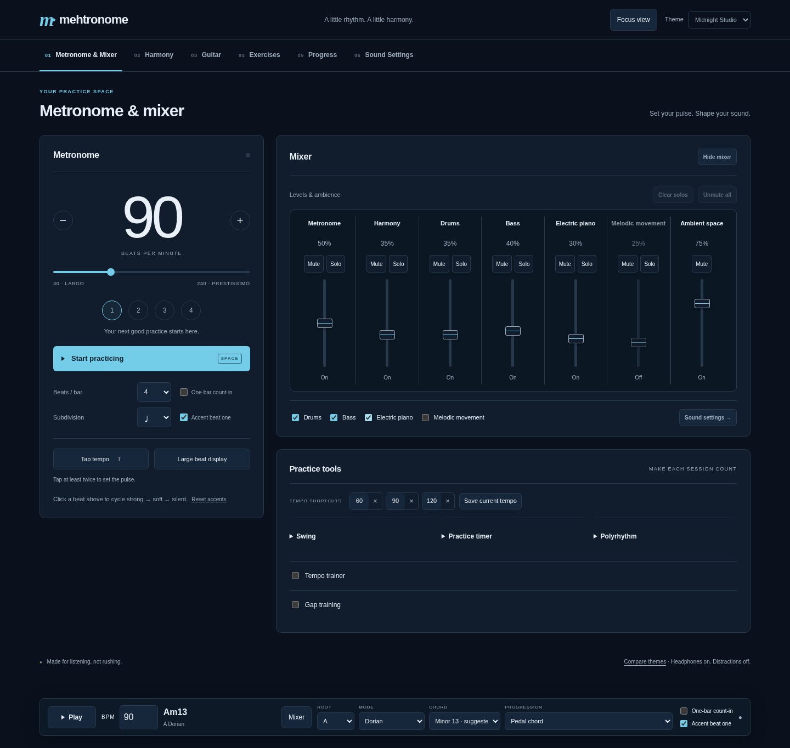
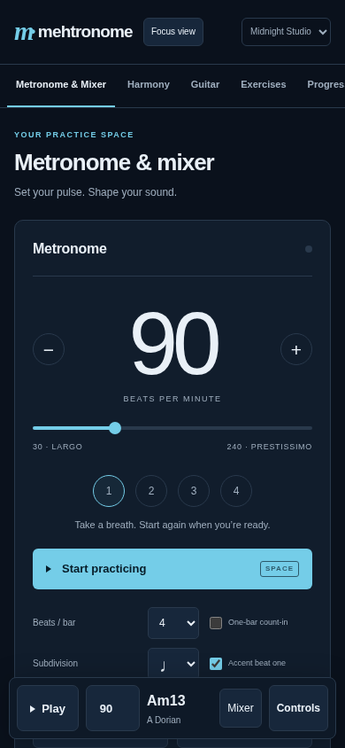
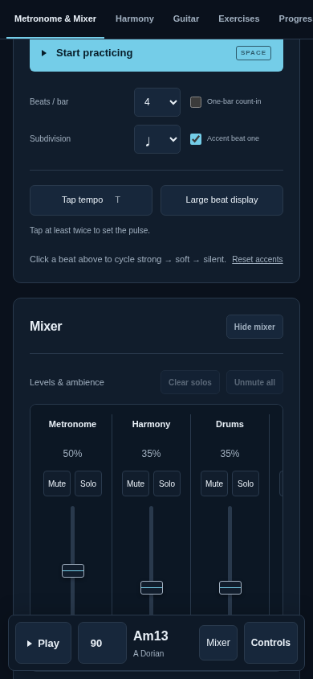

Metronome & mixer
The approved reference for tighter spacing, aligned console strips and consistent controls. These prototype screenshots show the layout direction now applied to the app; colour schemes will be refined separately.
Desktop

Phone
The same controls stack vertically. The console scrolls horizontally through the channels.

